Max Freeman
Hi! I'm Max, a senior studying Mechanical Engineering at Cornell University. This website serves as an online portfolio for the work completed during MAE 4190 (Fast Robots).
Hi! I'm Max, a senior studying Mechanical Engineering at Cornell University. This website serves as an online portfolio for the work completed during MAE 4190 (Fast Robots).
This part of Lab 1 was primarily focused on getting our Artemis Boards set-up and ensuring that core functionalities were working correctly before proceeding any further. As such, it mostly involved running example scripts available through the Arduino library.
The first task in this lab was to run the "Blink it Up" example that comes with the Arduino IDE. This worked without any issues, as seen in the video below.
The purpose of this task was to ensure that the Artemis was correctly sending data to the serial monitor. In the image below you can see that this worked correctly - when I typed "hi", the serial monitor succesfully echoed this back to the serial output.
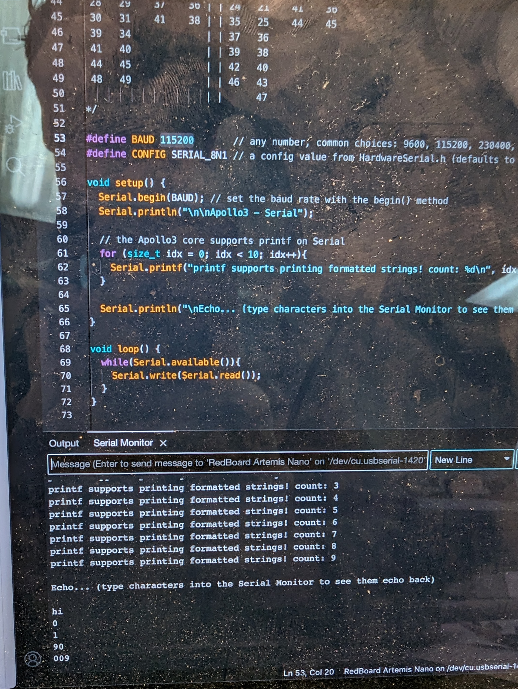This task was intended to test that the onboard temperature sensor was working correctly. In the video below, you can see how the temperature output to the Serial Monitor changes when I put my thumb over the sensor.
This task was intended to test that the onboard microphone was working correctly. In the video below, you can see how the "loudest frequency" output to the Serial Monitor changes when I tap the microphone.
Lab 1 was a good opportunity to get up and running with the Artemis board and ensure there were no major software or hardware issues before proceeding.
The second part of Lab 1 was focused on setting up a Bluetooth connection between our computers and our Artemis boards. We worked on testing several basic functionalities in order to build our understanding of the BLE library and how to send and recieve data with our Artemis board.
The prelab for this Lab required us to set up a virtual environment on our computers and then download the Codebase for the Lab to this environment. Once this was done, we started a Jupyter server from the virtual environment and then setup our Artemis boards for bluetooth connection. We could verify that this step was properly completed by checking that the Artemis successfuly output its MAC adress to the Serial Monitor, as seen below.
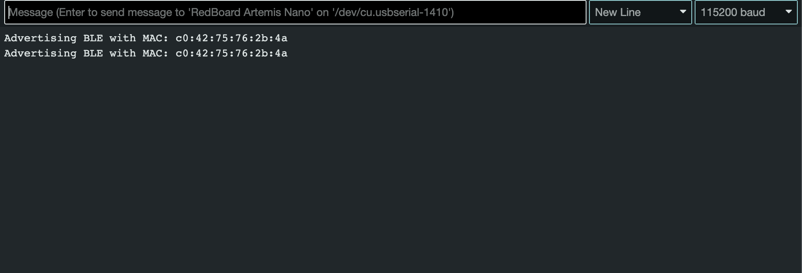Initiating a bluetooth connection between our computers and our Artemis board required us to generate a unique UUID, as well as referencing the correct MAC address. This UUID was then referenced in the ble_arduino.ino file to ensure that we connected to the correct device. The MAC address and UUID were also referenced in the connections.yaml configurations file. With this done, a successful connection was established.
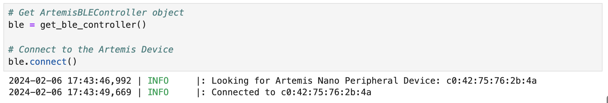This task required us to implement a new command on our Arduino that recieved an input string and then sent back an augmented string to our computers via bluetooth. In this case the string "Robot says -> ... :)" was added to any string input. So a string input of "HiHello" would return "Robot says -> HiHello :)" to our computers. Arduino code for this command, as well as evidence of it working can be seen below. Before implementing this function, the command had to be added to the CommandTypes enum on the Arduino code and the cmd_types.py file.
This task required us to implement a command on our Arduino that sends the current time from the millis() function from our Arduino to our computer. millis(0 returns the time, in milliseconds, since the arduino booted up.
In this part of the Lab, we created a notification handler to recieve strings from our Arduino. Some minor parsing was added to the handler so that it stripped the "T:" from the returned time and only printed the actual value of the time. A global list, messages, was created for storing all strings in a single transmission, which was useful for some of the data analysis tasks later in the Lab.
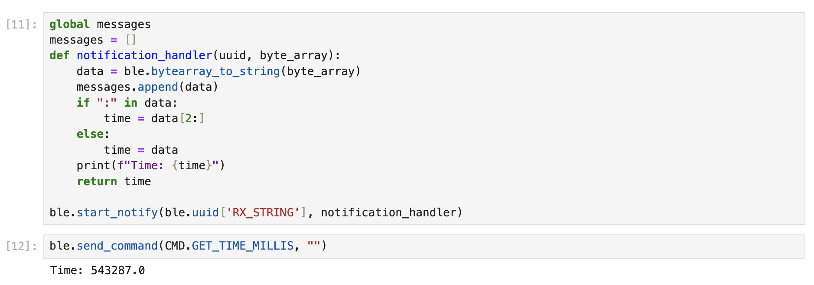The latter portion of the lab focused on comparing different methods of sending data from the Arduino to our computers in order to find out which methods were fastest.
Here, we created a new command that rapidly recorded the current time using milli() and sent them one by one to the computer via bluetooth. I created a for loop and used it to send 1000 time values to my computers. Once I had received them, I used this information to work out how many messages per second I was sending to my computer. This number came out to be about ~160 messages per second. Using the fact that each of these is a 16 bit string and that there are 8 bits in a byte, we can work out that the effective data transfer rate is about ~320 B/s

In the TEST_TIME_ARR command, the proccess differed in that the time stamps were all collected and stored locally in an array on the Arduino. Once all the values were collected in the array, the SEND_TIME_DATA command would iterate through the array and send the values one by one. In the notification handler (see 3), I stored each of these values into an array called messages. I then checked the length of this array to ensure 1000 timestamps were correctly recieved.
In the TIME_TEMP_ARR command, temperature and time data were collected simultaneously and stored in two different arrays, 'temp' and 'time'. The GET_TEMP_READINGS command then iterated through each of these arrays and combined the information together into a single, comma separated, string (e.g. "24013, 13")to send to the computer.
In order to parse this information, I created a new notification handler called temp_handler, which used the split() method to split the incoming string using the comma as a separator. I then stored the time and temperature data into separate lists, whie preserving the order. The images below show the code for the notification handler, as well as the sample output from running the code.
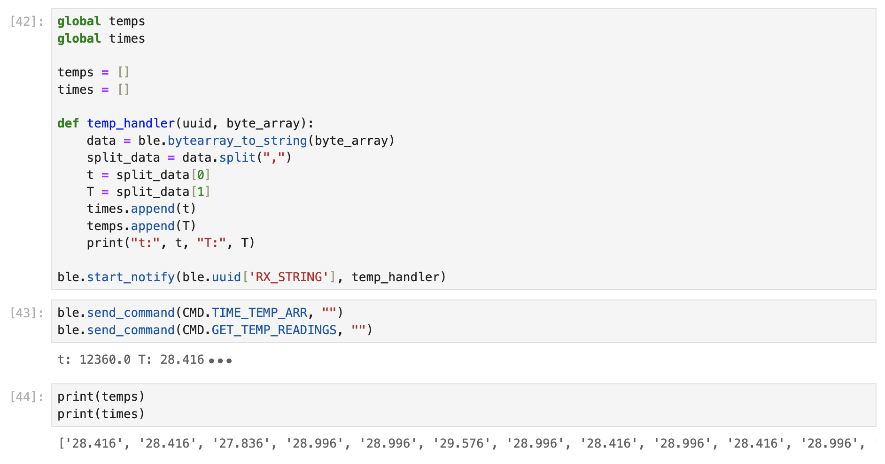The final part of this Lab asked us to compare the two data transfer methods demonstrated in tasks 4 and 5 - namely, writing data in large batches locally and then sending them one-by-one versus sending data one-by-one. It also asked us to consider how much data could be stored on the Artemis board before running out of memory.
The second method (where data was stored locally and sent in a batch) resulted in much greater rates of data transfer but the primary drawback here is that it uses up much more of the Artemis' onboard memory so we have to be careful not to overfill.
The Artemis has 384kB of RAM. The second method was writing data at a rate of ~32,000 messages per second, which results in a write speed of about 6.4kB/s. At this rate, the Artemsis would run out of memory in approximately 60 seconds. Looked at differently, if each piece of data is a 16-bit string, we can write 192 strings to memory before running out of space.
Overall, Lab 1 offered an invaluable insight into the workings of bluetooth communication, as well as providing an understanding of how sending data is not always just a matter of sending the data - there can be faster or more efficient ways within this.
Lab 2 was focused on setting up the IMU, beginning to collect data and implementing a Low Pass Filter and Complimentary Filter. The purpose of the lab was to investigate how these different methods of post-processing affect the data, as well as to see how information from different sensors could be combined to produce more accurate results. We are using the ICM-20948 IMU.
The beginning of this lab required us to setup our IMUs with our Artemis boards. We began by connecting the IMU to the board using the QWIIC connectors. This can be seen in the image below. I also implemented a small piece of code in my setup() loop, which makes the Artemis' on-board LED blink when it boots up. This was useful to add a bit of visual feedback for debugging purposes.

In establishing an I2C connection between our Artemis and IMU it was also importnat for us to consider ADO_VAL. This value determines the last bit in our IMU's I2C address. In my case, the IMU jumper was closed so the value was 0. The AD0_VAL value is important as it can allow us to have two IMUs connected to our Artemis with unique addresses.
After connecting the IMU and setting up a connection to it via I2C, I used the ICM-20948 example script, "Example1_Basics" to test out the IMU. The video below shows the output from the Serial Plotter when running this example script. This helped to confirm that the IMU was working correctly.
In order to better understand the data from the IMU, such as the differences between the accelerometer and gyroscope, I chose to send packages of recorded data via bluetooth to a Python environment. From here, I was able to conduct a more detailed analysis. This will be discussed in Sections 2 and 3 below.
After ensuring the IMU was correctly set up we then had to convert the raw data from the accelerometer (in the form of accelerations in the x, y and z directions) into pitch and roll values. This was done using the equations below. Note that it is not possible to calculate yaw from the accelerometer since the force of gravity acts along the z-axis, which is the axis that yaw acts around. Any rotation about the z-axis (yaw) will not result in a change in gravitational forces measured by the accelerometer and, hence, yaw cannot be measured.
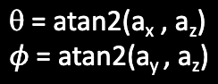To confirm that these equations were correctly implemented, the IMU was placed at orientations of -90, 0, and 90 degrees in both the pitch and roll directions. The surface and edges of a table were used in order to get these values as close as possible. There is some discrepancy between the reported IMU pitches and rolls and the actual pitches and rolls but, in general, they are in accordance with one another. Any discrepencies are small enough to be attributed to a mix of innacuracy in the setup (i.e., placing the IMU at an ange that isn't exacty 90 degrees) and noise.
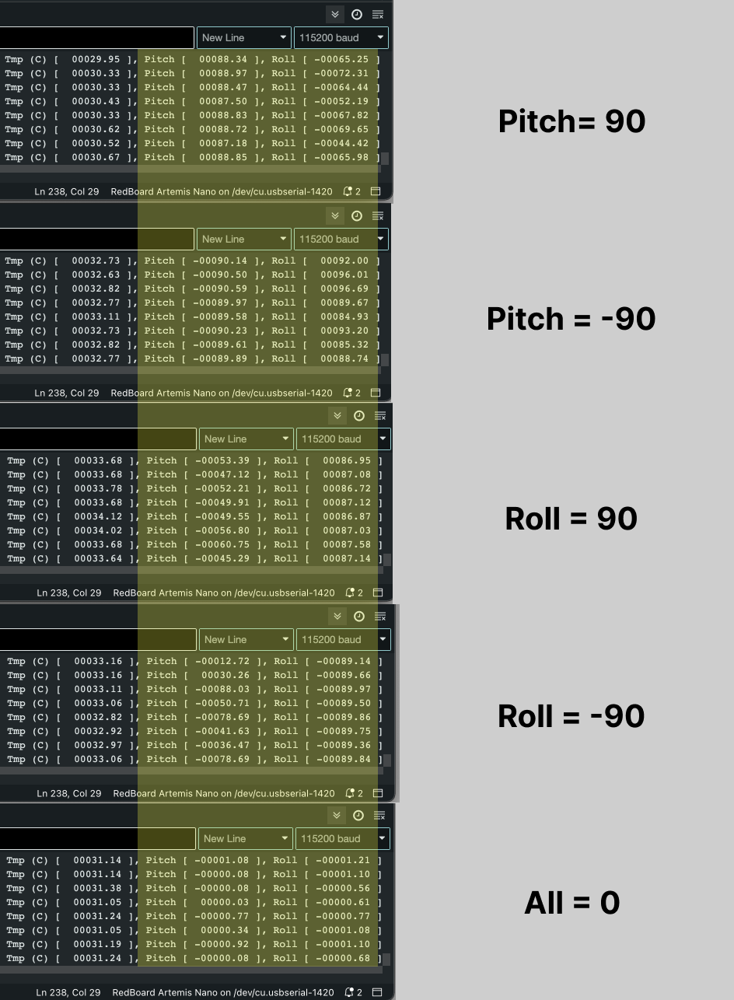I then used a Fast Fourier Transform (FFT) to conduct a frequency spectrum analysis of the accelerometer signal. This was used to analyse the impact of background noise on the accuracy of the signal. A Low Pass Filter was then implemented to remove noise from the final signal. The results of this analysis in the pitch and roll directions can be seen below.
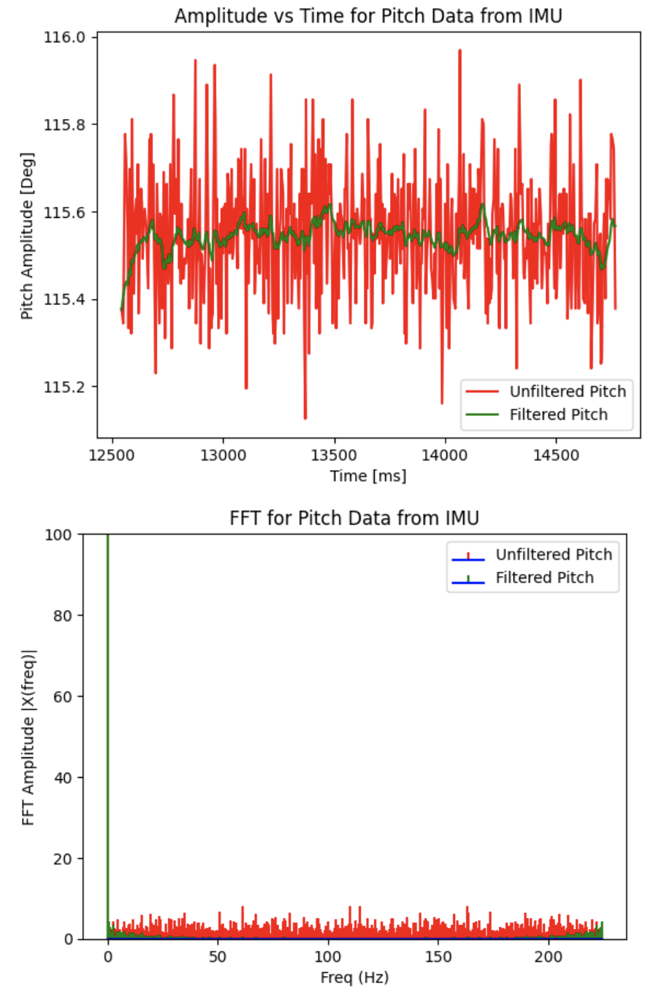 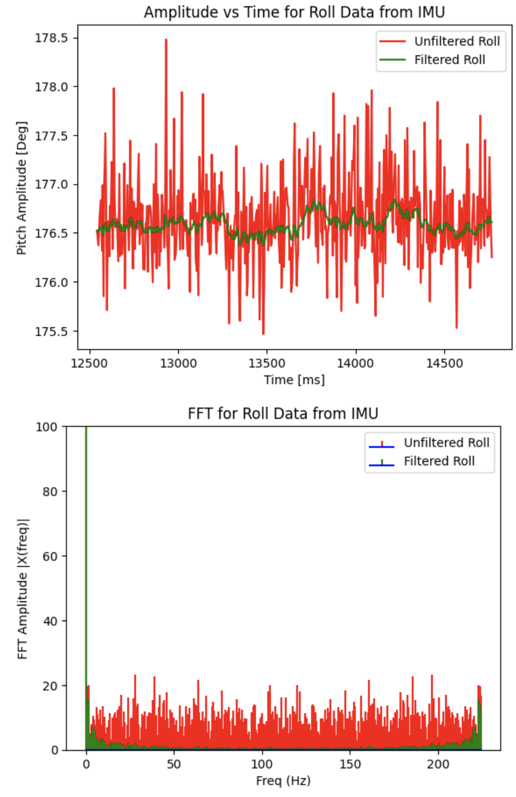In an ideal world, this analysis would have been conducted with the IMU attached to the robot as it was driving. This would allow us to record the vibrational frequency of the robot's driving and fiter this noise out. However, this lab was carried out before connections were soldered so we were not able to do this. As a result of this, there was relatively little background noise (about +/- 2 degrees) when the FFT was carried out. It is worth noting that the IMU we are using already has a built-in Low Pass Filter so this may explain the relatively small amounts of noise present in the unfiltered signal.
I still opted to implement a low pass filter with an alpha vaue of 0.08 because, after some testing, I found that this reduced the amount of noise in the data. Going forward, once the IMU is mounted to the robot, I would like to repeat this analysis to see if a better value of alpha can be chosen to minimise vibrational noise. The code snippet below gives a high-level version of the logic applied in the Low Pass Filter's implementation. As we can see, the Low Pass Filter successfuly removes much of the noise in the signal leading to closer to +/- 0.1 degrees of error. The effect of the Low Pass Filter can also be seen on the Frequency Spectrum FFT graph as the amplitude of many of the noisy frequencies decreases.
I then used the data from the IMU's gyroscope to compute pitch, roll, and yaw using a different set of equations. Since the gyroscope measures a rate of change in angle [deg/s], I multiplied the gyroscope reading by a time differential, dt, to get an angle in degrees. Some high-level pseudocode that demonstrates the logic for this can be seen below.
I then recorded this gyroscope data over a period of time and sent it to my Python environment via bluetooth to plot it. The plot below shows the pitch, roll and yaw data collected from the gyroscope while the robot was stationary.
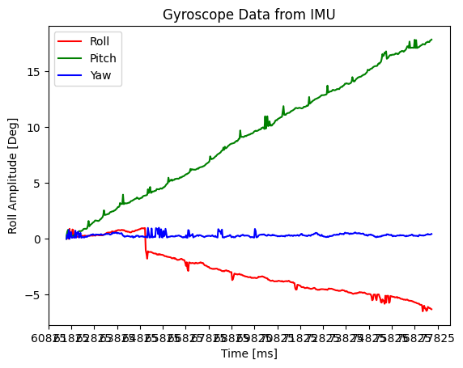Plotting the data revealed a few key differences between the signals from the gyroscope and accelerometer. Namely, although the gyroscope data isn't as noisy as the accelerometer, the method of computation results in a signficant drift in the signal. That is, the signal continually increases or decreases even when the robot is not moving. This drift can produce large errors in the angle recorded by the robot. As a result of this, I looked at combining data from both the gyroscope and accelerometer in a Complimentary Filter. This is discussed in Section 4.
The drifting of the gyroscope data has an important relationship with sampling rate. The slower the sampling rate - i.e., the longer the delay between fetching new data - the greater the data drift is. So, rapid sampling is important to reduce drift.
In order to implement a Complimentary Filter I fused the data from both the gyroscope and the accelerometer. The goal here is to get readings for pitch, roll and yaw that are stable, noise-free and not susceptible to drift. This relies on defining a value, alpha_comp, which determines the weighting between the gyroscope and accelerometer data. After testing, I found a value of 0.3 was optimal.
I chose to feed the results of my LPF accelerometer data into the Complimentary Filter rather than passing in raw data because, during my testing, this produced more reliable and less noisy results. However, this also introduces a slight lag in the data. This may be a problem when implementing a PID controller later in the semester, as it will slow down the control loop, which could cause some of the robot's movements to be less smooth. I iterated over several different versions of the alpha value for the Complimentary Filter, alpha_lpf, in order to reduce noise without introducing too much lag. The figures below show two examples with different alpha_lpf values recorded whille moving the IMU. The first plot was created using an alpha_lpf value of 0.08, while the second was created using an alpha_lpf value of 0.2. The data in the second plot lags less, while still reducing noise. I chose 0.2 as my final value for alpha_lpf.
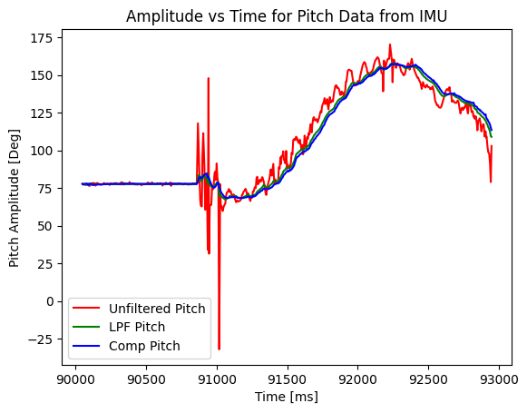 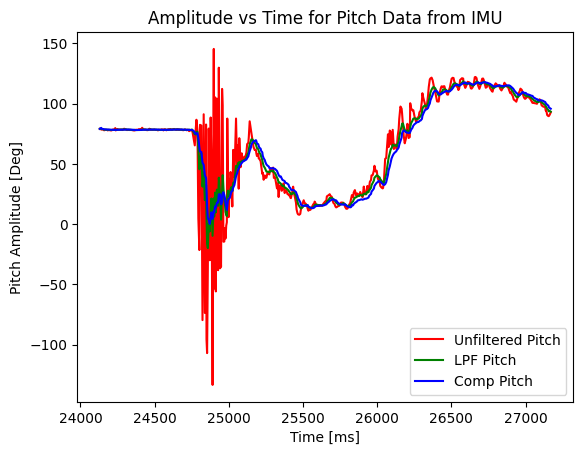The final part of this lab invovled restructuring the code base to speed up the sampling rate. Notably, I moved the filtering code into the main loop and removed all delays and print statements. I also updated my case so that it acted as a flag to start and stop recording data in the main loop rather than carrying out the data collection in the case itself. With these changes I was able to achieve a sampling rate of ~300 Hz, which corresponds to one measurement every ~3ms.
I then tested this over a period of 5s to confirm that I could collect and send that amount of data of bluetooth. I also printed the first 10 values of each of the pitch, roll, yaw, and time arrays to confirm they were correctly populated. The results of that test can be seen in the image below.
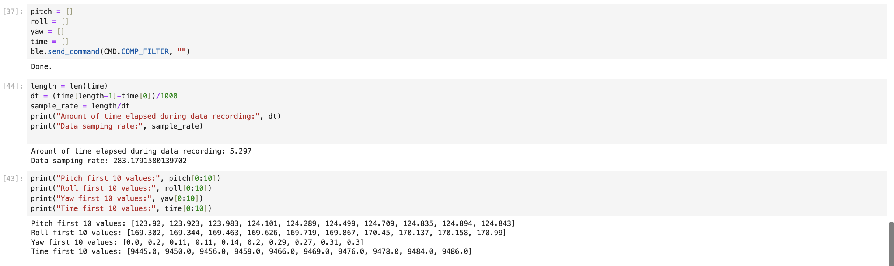Finally, I tested the RC car out to get a sense of its behaviour so that I could establish a baseline to see it was working correctly. A video of this can be seen below.
Lab 3 focused on setting up the Time of Flight (ToF) sensors on our robots. We installed a QWIIC Breakout board to allow us to connect three sensors to our Atermis boards: the IMU and two ToF sesnors. We then soldered the QWIIC connectors to our ToF sensors. We then tested our ToF sensors, considering strategies to manage having both sensors communicating over I2C at the same. We are using the VL53L1X ToF sensor.
One of the major problems in this lab was working out how to communicate with both ToF sensors over I2C. This is because both sensors had the same default I2C address. The default address listed in the datasheet for the ToF sensors is 0x52. However, by performing an I2C scan of connected devices we can see that the ToF sensor's actual address is 0x29 (see image below). In order to connect two ToF sensor and communicate with both of them over I2C, I had to change the address of the second sensor.
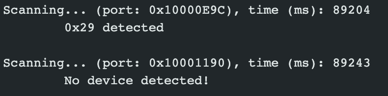I chose to change the address of the second sensor to be 0x30. This was done by using the XSHUT pin on the sensor to power it down. The address was then changed and the sensor was powered back on. Sample code for this can be seen below.
The image below shows a wiring diagram for how the sensors were connected to the Artemis board. The thicker purple lines indicate connections where ordinary QWIIC cables were used, while the thinner lines indicate soldered connections.
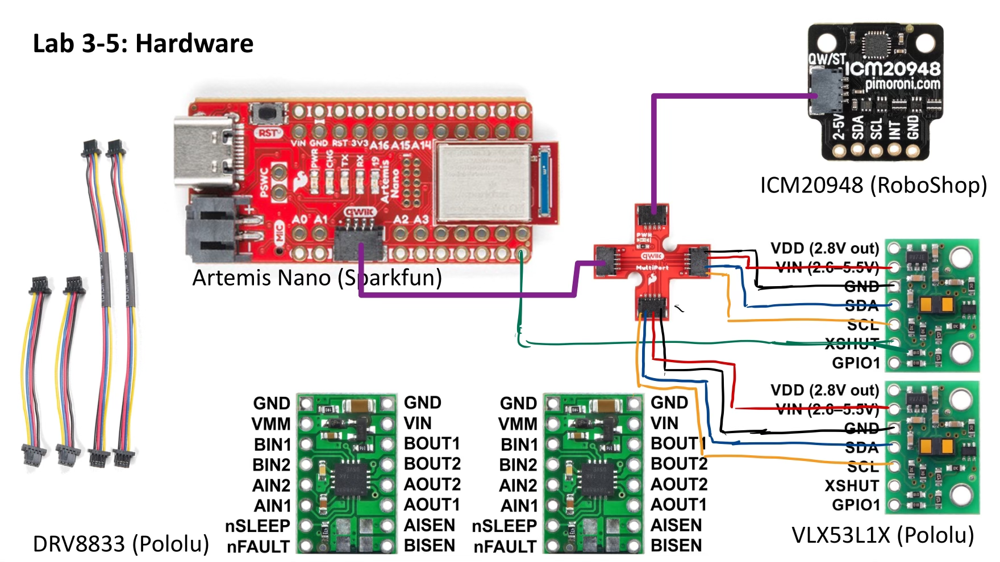The finished board with IMU and two ToF sensors can be seen below.

As the robot only has two sensors it will only be able to detect obstacles in a maximum of two directions using the ToF sensors. It makes sense to place at least one sensor in the front since this is the default direction of travel for the robot. The second could either be doubled up at the front to increase the reliability of the results by offering two sets of readings, or placed on one of the sides to increase the robot's awareness of its surrounding area. I will likely choose to mount the second sensor to the back of the robot. Ultimately, this means that obstacles coming towards the robot from the sides will be missed.
The ToF sensors have two modes that optimize their ranging performance for different maximum ranges. "Short Mode" is optimized for distances of up to 1.3m, while "Long Mode" is optimized for distances of up to 4m. In order to test each of these modes, and the performance of my sensors in general, I mounted the sensor to a fixed point and used a tape-measure to place an object at different distances from the sensor. This setup can be seen below.

I took readings from the sensor at distances of: 0.2m, 0.4m, 0.6m, 0.8m, 1.0m, 1.5m, and 2.0m accross both modes. For each distance, I took 50 recordings. I then sent these results to my Jupyter environment and plotted them, as well as computing average distances, standard deviations and percentage errors for each case. These results can be seen below.
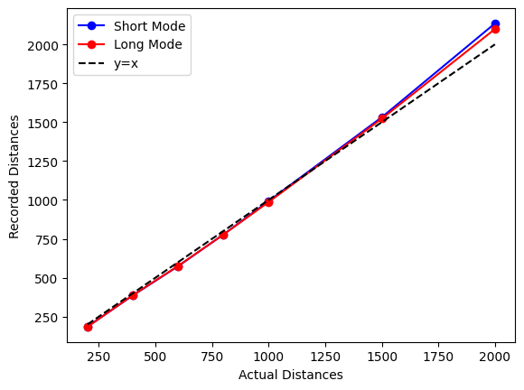 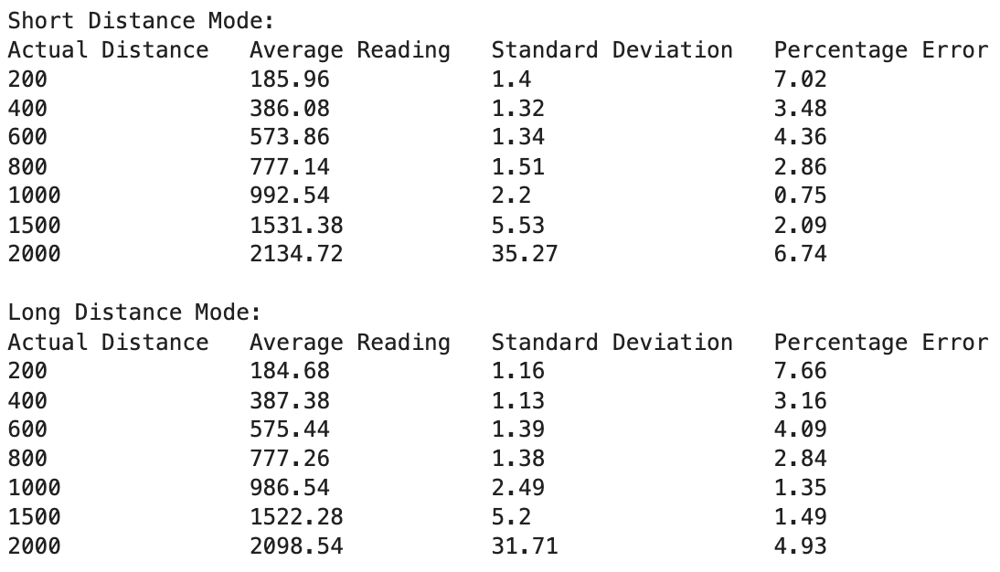The results were reasonably consistent across both modes. As expected, though, the Long Mode was much more accurate than the Short Mode at longer ranges. This analysis also revealed that the reliability of the data decreases dramatically at range, with the standard deviation between readings rising up to ~30 after 2m. Overall, I find that, given that these two modes performed similarly, the Long Distance mode should be used going forward. This wil give the robot the opporunity to respond to obstacles at a greater distance, which will help given how fast it travels.
Once the address was changed, as described in Section 1 above, I was able to collect data fromn both ToF sensors simultaneously. This is demonstrated in the video below.
I also wanted to compare the rate at which the ToF sensors were collecting data with the rate at which the main loop of the Artemis board was running. To do this, I printed the current on-board time as quickly as possible and printed a "NEW DATA" flag only once data from the sensors became available. This analysis showed that the main loop ran about once every 1-3ms when the sensors were not trying to collect data. Once the data collection process started, the main loop only printed the time once every ~10ms. Additionally, the sensors report a new value about once every ~100ms. A screenshot from a moment during this test where the sensors where collecting data can be seen below. I think the current limiting factor of the speed of the loop when data collection is happening likely comes from the call to check if new sensor data is available - "checkForDataReady()".
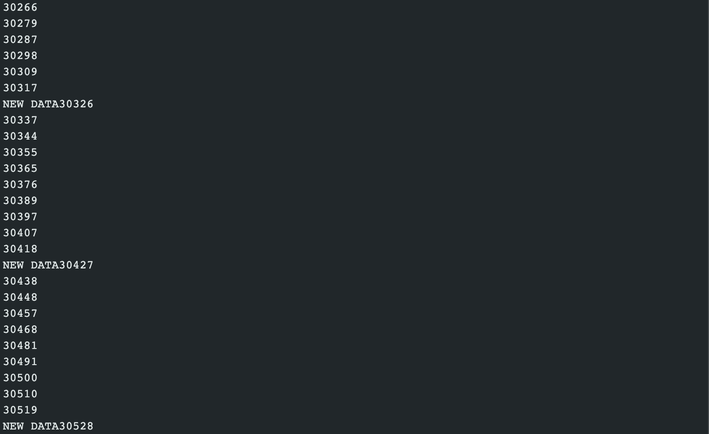In order to carry out this test, I used the following code in my main loop() function:
Finally, I recorded timestamps along with all of my sensor data. I then sent this data to my Jupyter environment via bluetooth and plotted distance vs time graphs. An example of one of these graphs is shown below.
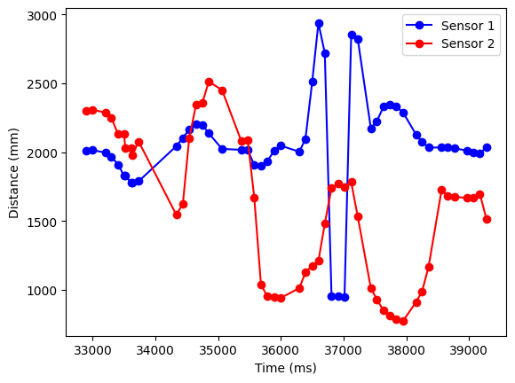Lab 4 focused on setting up the dual motor drivers for our robot and switching from manual control to open loop control. We first soldered the motor drivers to the Artemis board and then connected and mounted all components from the previous labs inside the chassis of the robot. After this, we calibrated and tested our motors before demonstrating open-loop control of our robot.
Before we could start soldering the motor drivers to the board, we first had to plan out how we would wire them. The wiring diagram below shows the final setup for this. One key consideration for this step was ensuring that the motor drivers were connected to PWM enabled pins on the Artemis board. After consulting the Artemis specifications, pins 4, A5, 6, and 7 were selected for use, as they were PWM enabled and in locations that were physically close to the motor drivers. Though the motor drivers we are using are designed to control up to two motors each, we opted to bridge the A and B pins on each of the motor drivers. This allowed each motor driver to deliver twice as much current to the motors, allowing for faster motor speeds.
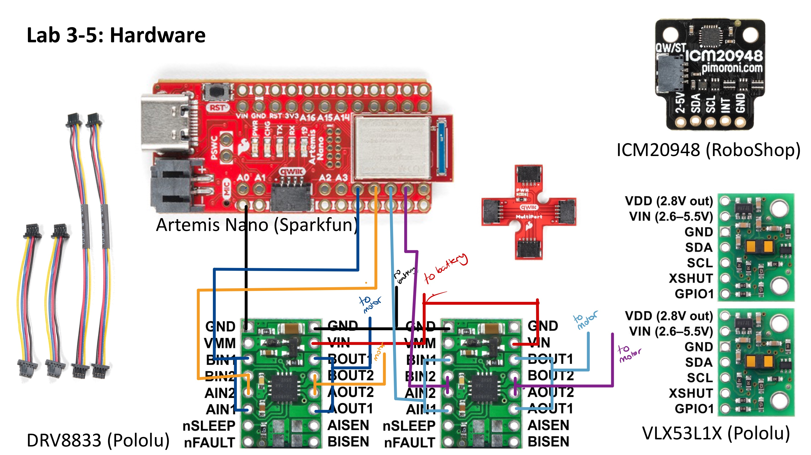It is also worth discussing battery power in this arrangement. Both motor drivers draw power from one battery, while the Artemis draws power from its own, separate, battery. Because of this, it was necessary to bridge the Vin and GND terminals of the two motor drivers so that they could be powered from the same battery. The Artemis and motor drivers are powered from different batteries in order to avoid any undesirable effects under load. If they were powered from the same battery, it is possible that the motors would draw too much current under load, causing the Artemis to power down or reset. Powering the motors and Artemis separately also acts as something of a back-up, so that the Artemis can still remain powered on even if the motor battery is fully discharged.
Once I had soldered the first motor driver, I tested it using an oscilloscope and power generator to verify that the PWM signals were being correctly generated. I connected the Vin and GND pins of my motor driver to an external power supply. I chose to set the power output of this supply to 3.7 V in order to replicate the same voltage that would come from the battery (3.7 V 850 mAh). Also, by looking at the datasheet for the motor drivers we are using, we can see that the range given for the operating voltage is 2.7-10.8 V, so a voltage of 3.7 V is acceptable. After powering the motor driver board, I attached the oscilloscope probe to one of the board's output pins and attached the other end of the probe to the common ground from the power supply. This setup can be seen in the image below.
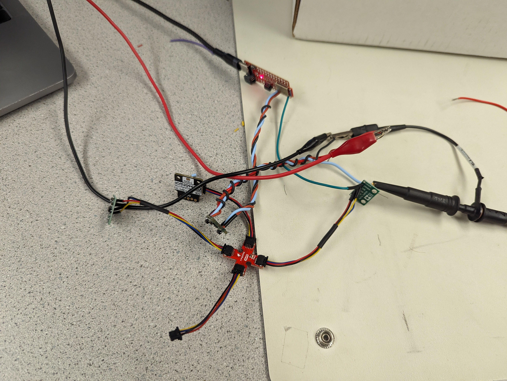I then sent a simple PWM signal to the motor driver. I began by defining each of the pins that were connected and switching the pin mode for these pins to be output. I then used the analogWrite function to send a PWM value of 200 to the motor driver. A code snippet of this can be seen below.
I then used the osciloscope to verify the output. This output is shown below. The output from the oscilloscope confirms our expectations in two ways. Firstly, it is a square wave, as we would except for a PWM output; and, secondly, it reflects the high duty cycle (200) that I used as an input, because the output is HIGH for most of the period.
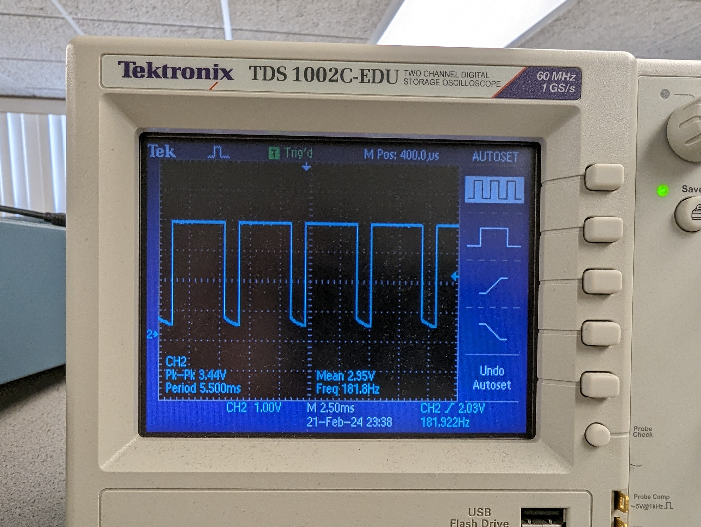After confirming the motor driver was working correctly, I then sodlered it into the car to test it on the actual motors. To do this, I sent another simple PWM command to the robot, except this time I alternated between sending forward and backward commands to test whether the wheels could spin both ways. The code snippet below shows the code used and the video below shows the result of this test. As you can see, the wheels on the robot spin one way, before switching and spinning in the opposite direction (this change in direction is also evidenced from the robot rocking back and forth because of its inertia).
Next, I soldered the second motor driver in place and connected both drivers to a 3.7V 850mAh battery, rather than powering them from the external power supply. I then ran a simple test to see if both wheels would spin forward. The results of this test can be seen below.
The image below shows the final layout of the components mounted onto the robot.

With the components all soldered and mounted onto the car's chassis, it was now time to test driving the car. The first issue was calibrating the motor drivers. Given that the motors we are using are very cheap and of low quality, both sides may spin at different rates, even when given the same PWM input. This could be due to different amounts of friction in their internal gearboxes, for exampe. The video below shows the result of the car driving forward with the same input PWM to both motors. As you can see in the video, the car veers left. This is because the motors controlling the wheels on the left-hand side of my car had higher friction and therefore spun slower than the right-hand side.
In order to address this, I created calibration constants for the left and right motors to scale the PWM inputs such that the motors would spin at the same speeds. After testing various values for these constants, I found that a right_cal value of 0.6 and a left_cal vallue of 1 (i.e., unchanged) helped match the motor speeds better. The code below shows how I accomplished this.
Finally, the video below shows the car moving in a (relatively) straight line after the motor inputs had been scaled, as described above. While the car can drive straight for distances of ~8ft, it does still start to veer off at larger distances, as can be seen towards the end of the video. Again, this is likely due to the low-quality of these motors. However, this isn't overly concerning because once we implement our PID controllers, any small deviations like this can be corrected for.
This veering behaviour can be explained in terms of the different levels of internal friction in each of the motors. Even when calibrated to run at the same speeds, I found that the right motor would freely spin for longer than the left motor once they were both shut off. The video below shows both motors spinning (at approximately the same speed, thanks to calibration) and then being shut off. As you can see, the right motor continues spinning for significantly longer than the left one.
While calibrating my motors, I initially ran into an issue where my left motor was spinning extremely slowly, which significantly limited the maximum speed of the car. At first, I thought this might just have been a result of the poor quality of the motors but, after further testing, I realized that some of my soldered connections on the left motor driver pads did not have enough solder, which was limiting the amount of current that could flow to the motors. After applying more solder to these pads, I was able to achieve normal motor speeds and carry out the calibration described in Section 6, above.
I also wanted to find the minimum PWM values required for each of the following behaviours: driving forwards, driving backwards, and on-axis turns in each direction. That is, what minimum PWM input is required for the wheels to spin fast enough to overcome friction and perform each of these behaviours. After repeatedly testing different values, I found the following approximate lower limits:
Finally, I wanted to test open-loop control of the robot including turns and both backwards and forwards motion. Though not strictly required, I decided to test sending these commands to the robot via Bluetooth, rather than hard-coding a particular path into the robot. In order to do this, I defined three new commands: FORWARD, BACKWARD, and TURN90R. The first two would drive the robot in the named direction for 0.5 seconds, and the second one would turn the robot approximately 90 degrees to the right about its axis. Following from what we had learnt in the previous labs, I implemented flags that were triggered once the relevant command was called, which would then run code in the main loop to move the robot as needed. The first code snippet below shows the code in the FORWARD case, which triggers the flag when the command is called, and the snippet after that shows the corresponding logic in the main loop. In my actual implementation, this concept was expanded to also include the BACKWARD and TURN90R commands.
After implementing this code, I was able to send commands to the robot via bluetooth from the Jupyter environment, as seen in the image below.
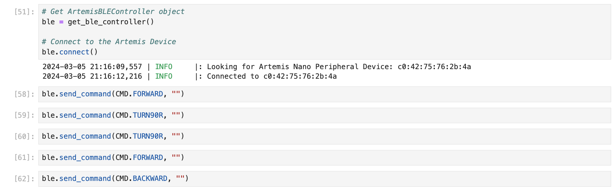The robot's response to these commands can be seen in the video below.
As a last step, I created a function that would drive the motors based on an input value, u, which ranged from -100 to 100. This function would map the u value to a PWM speed through a linear relationship with a positive y-intercept designed to increase the PWM input above the minimum PWM values found in Section 8. A negative value would correspond to driving the motors backwards, while a positive one would drive forwards. The higher the magnitude of the input, the faster the motors would spin. This type of control is useful for implementing the PID controllers in the next lab. The code for this function can be seen below.
Foo
Foo